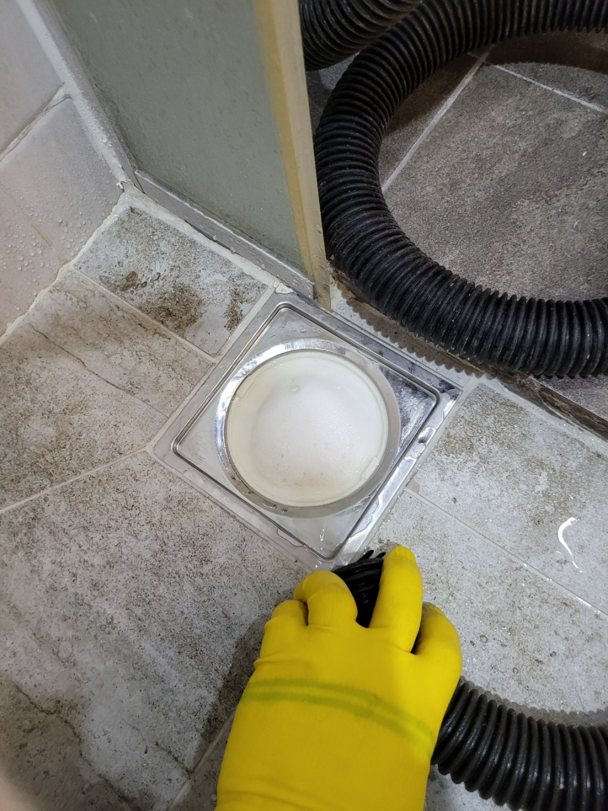
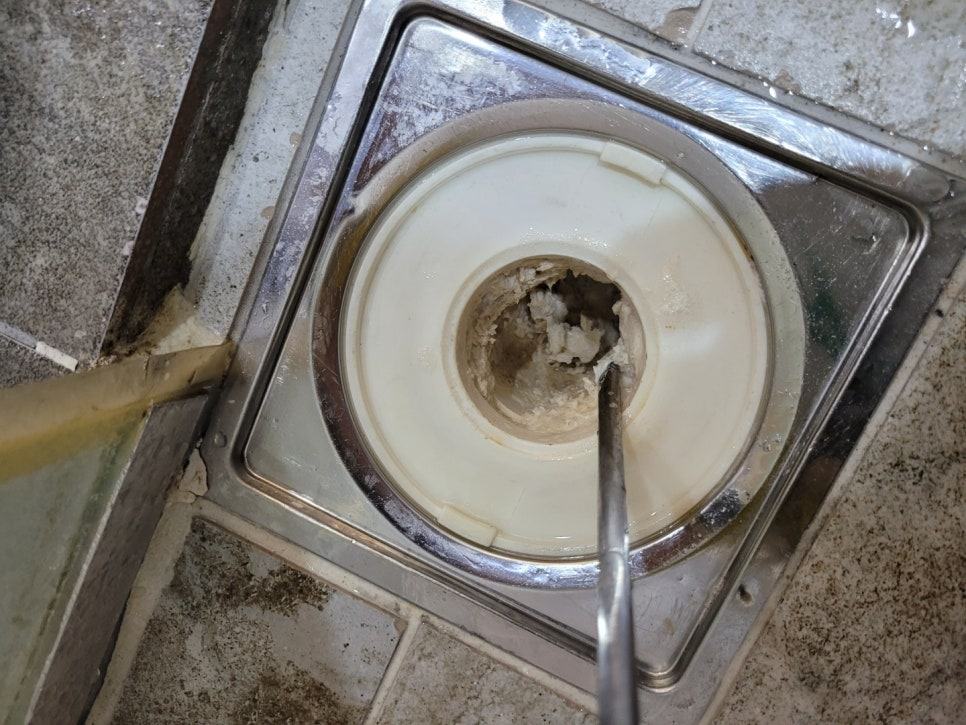
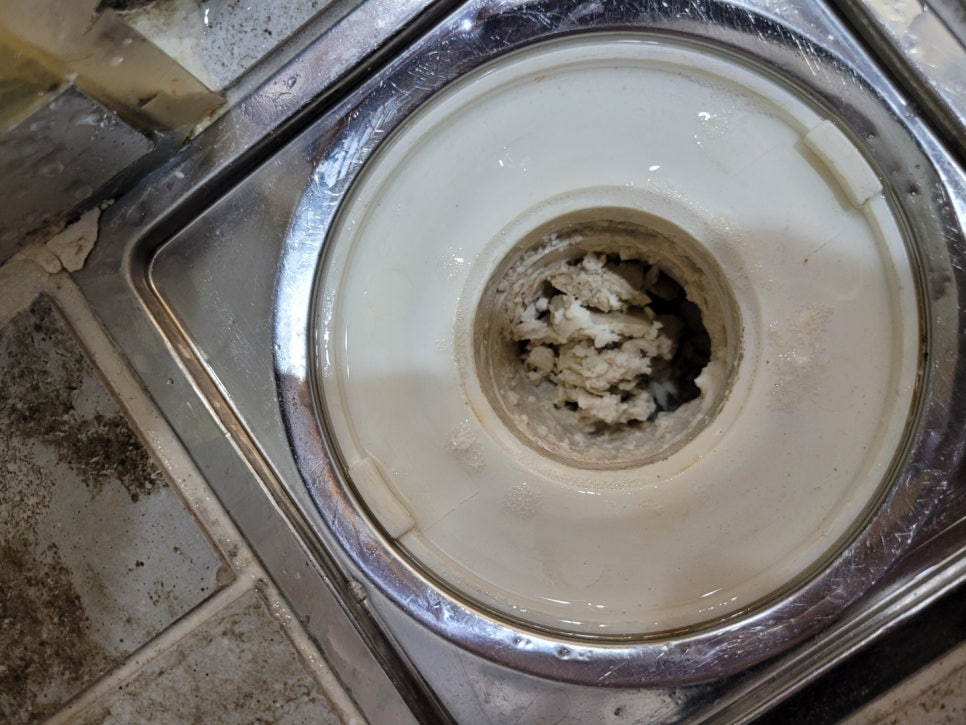
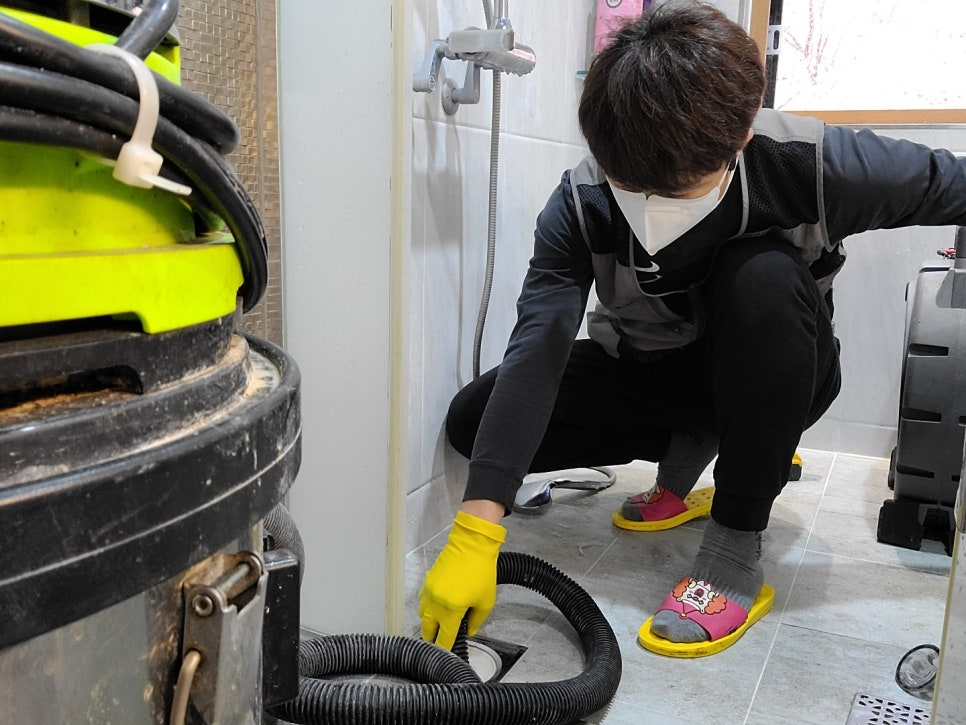
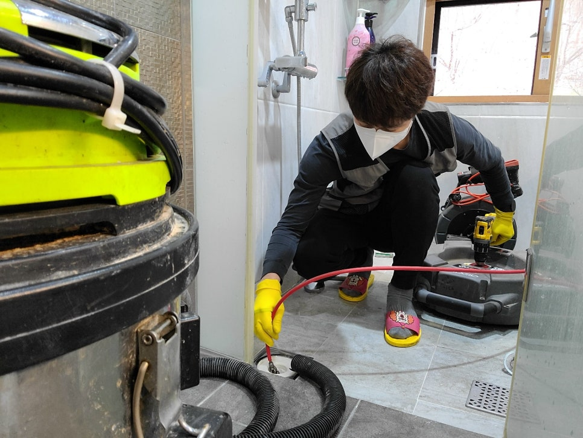

🏠 기흥구 욕실하수구막힘 깔끔하게 해결 완료된 현장 보시죠!
용인 기흥 하수구막힘 전문 시공 후기

📋 작업 개요
- 위치: 용인 기흥, 기흥, 용인
- 서비스 유형: 하수구막힘, 배관막힘, 뚫는업체, 설비공사
- 작업 일시: 2023. 1. 17. 17:49
- 업체명: 하수구수사대 (010-5615-2118)
🔍 문제 상황
기흥구하수구막힘 전원주택 욕실석회제거
안녕하세요
"하수구수사대"입니다.
기흥구에 위치한 전원주택의 욕실하수구가 잘 내려가지않아
시원하게 뚫어달라는 연락을 받고 출동 하였는데요
건물은 지은지 4년정도 되었지만 이전에도 문제가
생겨 한번 뚫은적이 있다고 하였습니다.
하지만 시원하게 내려가지 않아 답답하게 사용하고 계셨고
답답하여 근본적인 원인을 찾아 해결하고자 연락을 주셨습니다.
오죽하면 사모님께서 샤워기위치를 바꿔달라는 말씀까지
하셨답니다.

🔎 원인 분석
💡 전문가 진단: 하수구수사대010-2340-2118
샤워기 물을 흘려보내니 얼마 가지않아 물이 차오르는것을
확인할수 있었는데요 겉으로 보았을때는 입구쪽부터
석회가 있는것이 확인되어 원인이 석회로만 알고 있었는데요
근본적인 원인은 따로 있었답니다.
우선 입구쪽 석회부터 약품으로 석회를 연하게 만들어주고
드라이버로 보이는 석회를 제거해 나갑니다.
딱딱하게 굳은 석회를 제거하면서 배관에 무리를 줄수 있기때문에
조심스럽게 작업이 진행됩니다.
갈아낸 석회를 석션으로 뽑아주고 배관 내부에 있는
석회는 플렉스샤프트 장비를 투입하여 배관속 석회를
제거하는 작업으로 진행 되었어요.
고객께서 석회가 왜 생기는거냐고 물어보셨는데요

🔧 작업 과정
샤워할때 사용하는 샴푸,비누,바디워시 등등 거품을
내는 제품에서 주로 발생하는데요 샤워를 마치고
거품이 배관에 붙어있다가 마르면서 하얗게 굳어버리는것이
석회가 된답니다.
내시경카메라로 확인을 해보니 내부쪽은 더 심하게
막혀있었는데요 근본적인 원인은 따로 있었답니다.
바로 시멘트였는데요 아마 공사를 하면서 잘못 흘러들어간 시멘트가
배관 일부분에 굳어 거품이 잘 쌓여 석회가 되었던 것입니다.
다행히 밑에층에서 배관이 노출되어있어 배관을 타공하고
카메라로 확인을 해보았는데요 시멘트가 엘보부분에 굳어서
작은 물구멍만 나있는것을 확인할수 있었답니다.
일부분은 90%정도가 시멘트로 막혀있어 배관을
자르고 시멘트를 제거하기로 하였답니다.
배관을 교체하는것도 좋은 방법이지만 사진을 보시다시피
엘보부분은 천장으로 깊숙히 박혀있어 배관교체는
어렵답니다.
시멘트를 제거하고 잘라낸 배관을 연결하고
내시경카메라로 촬영을 하였는데요
보시는것처럼 물이 흘러나가는데 전혀 지장이


✅ 작업 완료
없을 정도로 깨끗해 졌습니다^^
고객께서도 근본적인 원인을 해결하고 나니
속이 후련하다고 하시면 만족해 하셨답니다.
하수구수사대
010-2340-2118




⚠️ 하수구 배관 막힘 예방 및 관리 가이드
- ✅ 머리카락, 비닐, 물티슈 등 물에 분해되지 않는 이물질은 하수구 유입을 절대 금지해 주세요.
- ✅ 하수구 거름망을 씌우고 모여진 이물질은 주기적으로 쓰레기통에 바로 비워주셔야 합니다.
- ✅ 배관 노후가 심할 경우 이물질이 더 쉽게 걸리므로 주기적인 배관 세척(고압세척 등)을 권장합니다.
- ✅ 작업 후 1년 이내 재발 시 하수구수사대에서 무상 A/S 보증 서비스를 제공합니다.
💡 핵심 정리
- 확실한 장비 작업(내시경 점검 및 샤프트 스케일링)으로 원인을 뿌리 뽑습니다.
- 작업 후 1년 이내에 동일한 부위 재발 시 100% 무상 A/S 서비스를 보장합니다.
- 서울 · 경기 · 인천 전 지역에 24시간 언제든 긴급 출동할 수 있도록 항시 대기 중입니다.
❓ 자주 묻는 질문 (FAQ)
🚨 용인 기흥 하수구막힘 문제로 고민이신가요?
정확한 원인 진단과 확실한 시공으로 재발 없는 해결을 약속드립니다.
24시간 긴급 출동 | 서울 · 경기 · 인천 전지역 | 1년 내 재발 시 무상 A/S